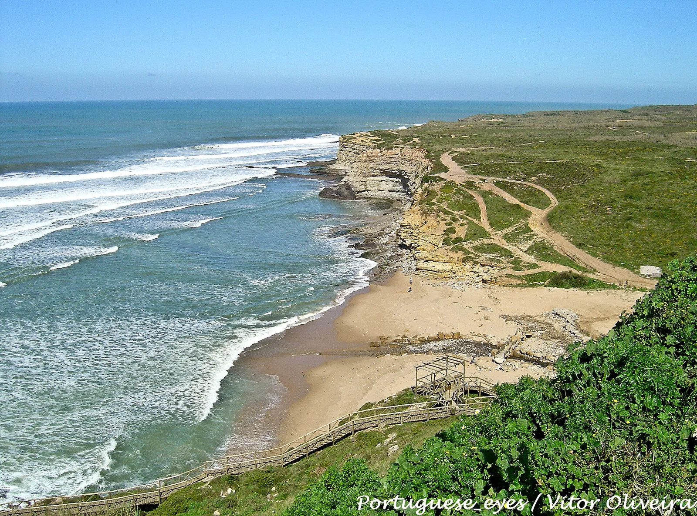

Ribeira d’Ilhas
Ericeira, Portugal · surf

Droite longue et régulière sur dalle rocheuse, au cœur de la réserve mondiale de surf d’Ericeira. Elle accueille régulièrement des compétitions internationales.
- Lieu
- Ericeira, Portugal
- Niveau
- Intermédiaire
- Activités
- surf
- Type d'eau
- Mer / océan
- Coordonnées
- 38.99, -9.42 (position approximative du secteur)
Dangers à connaître
- Fond rocheux coupant à marée basse.
- Line-up chargé le week-end.
Le conseil d'Ocean Buddy
Chausse des chaussons à marée basse et respecte l’ordre de passage au pic, très fréquenté.
Ouvrir dans Ocean Buddy Télécharger sur l'App Store
Source : Fiche Ocean Buddy · septembre 2026 · à vérifier localement.